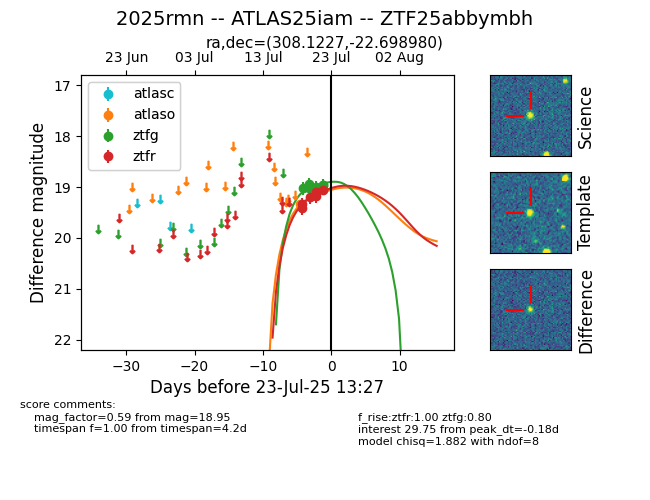

Target ZTF25abbymbh at 2025-07-23 13:27, see:
FINK: fink-portal.org/ZTF25abbymbh
Lasair: lasair-ztf.lsst.ac.uk/objects/ZTF25abbymbh
ALeRCE: alerce.online/object/ZTF25abbymbh
TNS: wis-tns.org/object/2025rmn
YSE: ziggy.ucolick.org/yse/transient_detail/2025rmn
alt names
ZTF25abbymbh (ztf,fink)
2025rmn (tns,yse)
ATLAS25iam (atlas)
coordinates:
equatorial (ra, dec) = (308.1227,-22.69898)
galactic (l, b) = (21.8173,-31.76028)
photometry
last atlaso=19.34, ztfg=18.95, ztfr=19.06
1 atlaso, 6 ztfg, 6 ztfr detections
